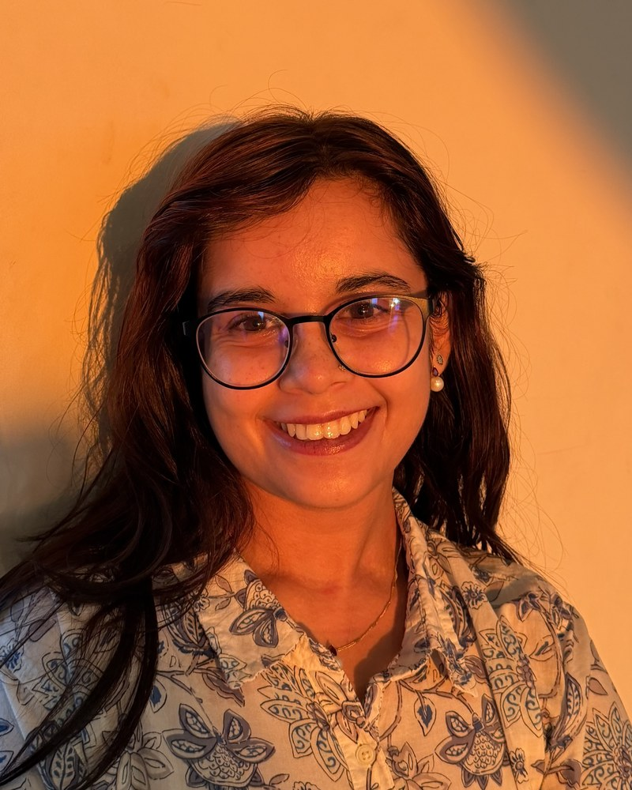

A two-timepoint framework for sensitive and specific single-cell activity screening
Neuron, 114:1–18 (2026) · doi.org/10.1016/j.neuron.2026.05.026

Researcher at the Zuckerman Institute studying alcohol use disorder and Research Co-Director at Nucleate NY.
About
I am a researcher in the Salzman Lab at Columbia University's Zuckerman Institute, where I work with Dr. Evan Kyzar on the neurobiology of alcohol use disorder, and Co-Director of Research at Nucleate NY, where I evaluate whether early-stage life science ventures are built on science that holds up. Both roles ask the same question from opposite ends: what does it actually take for preclinical science to become a treatment?
Brain regions do not function in a vacuum. Alcohol withdrawal and the behaviors that accompany it are mediated by large-scale, brain-wide coordination of activity rather than by any single region acting alone. My work uses two-timepoint neural activity labeling with subtraction (TTP-S), which tags the neurons active at two separate moments within the same brain so that overlapping and divergent populations can be told apart. This whole-brain analysis has identified more than 100 regions consistently activated during alcohol withdrawal and resolves intermingled neuronal populations that respond differently to withdrawal and intoxication, potentially mediating the behavioral switch between those states. I pair the imaging with automated behavioral phenotyping, correlating what an animal is doing directly with whole-brain activation patterns.
At Nucleate NY I direct scientific and commercial due diligence for the Activator program, assessing technical viability, market fit, and clinical translational potential across more than 100 early-stage ventures. I built the chapter's map of the New York investor landscape, over 200 firms indexed by investment thesis, into a resource that seed-stage founders use to target their fundraising, and I co-author the annual Impact Report benchmarking the chapter against the rest of the Nucleate network.
Before Columbia, I worked in the Becher Lab at the Icahn School of Medicine at Mount Sinai, investigating RBPJ-SIX1 as a tumor suppressor axis in diffuse intrinsic pontine glioma. I built mouse models of DIPG and characterized tumor growth using RNA extraction, Western blots, immunofluorescence, and MRI. As an undergraduate at Fordham I directed three independent projects in Dr. Eduardo Gallo's lab on ventral pallidum cholinergic projection neurons in cue-driven motivated behavior, using in vivo fiber photometry.
I am completing a Master of Arts in Biotechnology at Columbia University, expected in October 2027.
Neuron, 114:1–18 (2026) · doi.org/10.1016/j.neuron.2026.05.026
bioRxiv (2026) · doi.org/10.64898/2026.05.24.726981
Neuro-Oncology, 26(Suppl 4):iv38–iv39 (2024) · doi.org/10.1093/neuonc/noae064.136
Society for Neuroscience (SfN) 2025 · San Diego, CA · November 2025
Society for Neuroscience (SfN) 2024 · Chicago, IL (LBA69)
Society for Neuroscience (SfN) 2024 · Chicago, IL (PSTR296.25)
NYC Science Research and Mentoring Consortium · New York, NY · 2024
Basal Ganglia Gordon Research Conference · Ventura, CA · 2024
Fordham University Undergraduate Research Symposium · Bronx, NY · 2023
Society for Neuroscience (SfN) 2022 · San Diego, CA (Program 649.06)
rs4659@columbia.edu · Google Scholar · LinkedIn
A PDF version is available here.
M.A., Biotechnology · New York, NY · GPA 3.9/4.0
B.S., Biological Sciences · Bronx, NY
Advisors: Dr. Evan Kyzar, Dr. Daniel Salzman (P.I.)
Conduct behavioral and histological experiments across several projects on voluntary alcohol use — including the role of GLP-1 receptor agonists in mitigating voluntary alcohol use and preference, and defining the temporal progression of voluntary alcohol use in mice. Using immunohistochemistry, conditioned place preference and taste aversion assays, mouse handling and husbandry, chemogenetics, and confocal microscopy, we perform whole-brain cell-counting with an original pipeline to identify novel brain regions involved in alcohol consumption. Presented at the Society for Neuroscience Conference, 2024 & 2025.
Advisors: Anna Racanelli, M.S., Dr. Oren Becher (P.I.)
Investigated novel therapeutic targets for diffuse intrinsic pontine glioma (DIPG), specifically the RBPJ-SIX1 gene as a tumor suppressor. Using cell and neurosphere culture, developed mouse models for DIPG and conducted RNA extraction assays, Western blots, immunofluorescence, immunohistochemistry, and MRIs to characterize tumor growth. Mentored and trained high school interns in basic research techniques. Published in the Oxford Academic Neuro-Oncology journal.
Advisor: Dr. Eduardo Gallo (P.I.)
Directed three independent projects investigating ventral pallidum cholinergic projection neurons (VP-CPNs) in cue-driven motivated behavior. Used in vivo fiber photometry to characterize VP-CPN activity during cue-motivated assays; performed immunohistochemistry and data analysis in GuPPy and MATLAB to resolve activity on a trial-by-trial basis. Wrote Fordham Undergraduate Research Grant proposals and built operant behavioral assays. Mentored technicians, undergraduate, and graduate students. Presented at the Society for Neuroscience Conference, Chicago, 2024.
Advisor: Dr. Andrew Rasmussen
Developed a multi-level Qualtrics survey assessing how sociodemographic and cultural factors predicted risk perception among NYC college students during the COVID-19 pandemic. Analyzed a 2,800+ response dataset in SPSS and Excel; developed and co-authored a manuscript for publication.
Advisor: Dr. Daniela Levanon
Coordinated a weekly virtual lifestyle program during the COVID-19 pandemic for 126 low-income pediatric patients with nonalcoholic fatty liver disease (NAFLD). Corresponded between patients and providers; computed statistics on triglycerides, BMI, glycated hemoglobin, and other markers using Excel and EPIC; tracked biomarkers throughout the program to characterize efficacy.
Direct scientific and commercial due diligence on 100+ early-stage life-science ventures for Nucleate NY's Activator program, evaluating technical viability, market fit, and clinical translational potential. Using biotech deal analysis — investment-thesis evaluation and market sizing — mapped the NYC venture ecosystem end-to-end and built a strategic guide of 200+ target investors to accelerate seed-stage fundraising. Co-authoring the annual Nucleate NY Impact Report, synthesizing programmatic data to communicate venture growth and ROI and to benchmark chapter performance.
Mentored high school students in the Harlem Women in STEM Junior Scientist program in developing and presenting an independent research project, presented at the American Museum of Natural History in May 2025.
Planned and ran themed neuroscience events for local children as part of the Saturday Science committee, developing child-friendly interactive activities around a monthly theme.
Gannon A, Setara R, Maysonet CM, Salazar RE, Zuelke DR, Bowen JE, Gallo EF (2026). Ventral pallidum cholinergic neurons respond to reward and signal reward value. bioRxiv. https://doi.org/10.64898/2026.05.24.726981
Ramirez A, Kyzar EJ, Rogerson L, Berland C, Rodriguez E, Guerrero J, Setara R, Eisengart M, Virkar S, Hammond LA, Ferrante AW, Salzman CD (2026). A two-timepoint framework for sensitive and specific single-cell activity screening. Neuron, 114, 1–18. https://doi.org/10.1016/j.neuron.2026.05.026
Racanelli A, Shen C, Gadd SL, Chizhik M, Setara R, Ge Y, Schüpper AJ, Puigdelloses M, Hambardzumyan D, Tsankova NM, Becher OJ (2024). DIPG-83. RBPJ-SIX1 as a tumor suppressor axis in diffuse intrinsic pontine glioma. Neuro-Oncology, 26(Suppl 4), iv38–iv39. https://doi.org/10.1093/neuonc/noae064.136
Setara R, Kyzar E, Eisengart M, Virkar S, Rogerson L, Salzman CD (2025, Nov 15–19). Brain-wide signatures of alcohol withdrawal using two-timepoint activity labeling. Society for Neuroscience (SfN) 2025, San Diego, CA.
Kyzar EJ, Setara R, Rogerson L, Eisengart M, Ramirez A, Uceda-Alvarez B, Rodriguez E, Salzman CD (2024, Oct 8). Whole-brain two-timepoint analysis of neuronal activity during the progression of voluntary alcohol drinking. LBA69. Society for Neuroscience 2024, Chicago, IL.
Gannon A, Setara R, Salazar R, Maysonet C, Zuelke D, Gallo EF (2024, Oct 8). Activity of ventral pallidum cholinergic projection neurons increases in response to reward and is modulated by reward value. PSTR296.25. Society for Neuroscience 2024, Chicago, IL.
Cruz C, Rodriguez E, Uceda-Alvarez B, Setara R, Thurnherr M, Jones B, Salzman CD (2024). Determining whether social cues are modulated by oxytocin receptor neurons. NYC Science Research and Mentoring Consortium, New York, NY.
Cavallaro J, Mannheim W, Salazar R, Setara R, Maysonet C, Gallo EF (2024). Cue-evoked nucleus accumbens acetylcholine tracks reward value and delay cost in impulsive choice. Basal Ganglia Gordon Research Conference, Ventura, CA.
Setara R, Gannon A, Salazar R, Gallo EF (2023). Role of ventral pallidum cholinergic projection neuron activity in cue-driven motivated behavior. Fordham University Undergraduate Research Symposium, Bronx, NY.
Cavallaro J, Yeisley J, Setara R, Floeder J, Gallo EF (2022). Dopamine D2 receptors in nucleus accumbens cholinergic interneurons increase impulsive choice. Program No. 649.06. Society for Neuroscience 2022, San Diego, CA.
Animal behavior: Mouse handling and husbandry, operant conditioning, intraperitoneal and intracranial injections, fiber photometry, conditioned taste aversion, conditioned place preference, alcohol preference, in vivo optogenetics, Drosophila handling.
Molecular: Immunohistochemistry, immunocytochemistry, Western blot, sectioning brain tissue on cryostat and vibratome, cell culture, RNA extraction, confocal microscopy, bioluminescent imaging, rodent MRIs.
Computational: GraphPad Prism, ImageJ, BrainJ, Whole-Brain Reconstruction Pipeline, GuPPy, SPSS, MATLAB, EPIC, Qualtrics, spinning-disk confocal microscopy, Google Suite.